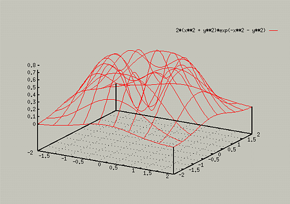
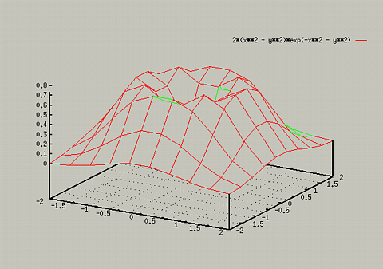

Sometimes, 3D graphs can be hard to interpret. For instance, the graph
of - z = 2(x2 + y2)exp(-x2 -
y2)
could be seen by typing the following:
- splot [-2:2] [-2:2] 2*(x**2 + y**2)*exp(-x**2 - y**2)

Note that in this graph, the set grid command was
used.
To make viewing this easier, you can use the set hidden3d
command. For instance, if you typed the following, you would get:

Table of Contents - Previous - 3D plots - Next - Increasing Resolution of 3D Plots
College of Natural Sciences /
University of Northern Iowa /
manager@cns.uni.edu
Copyright © 1996 College of Natural Sciences. All Rights Reserved.
Last Modified: 10/29/96